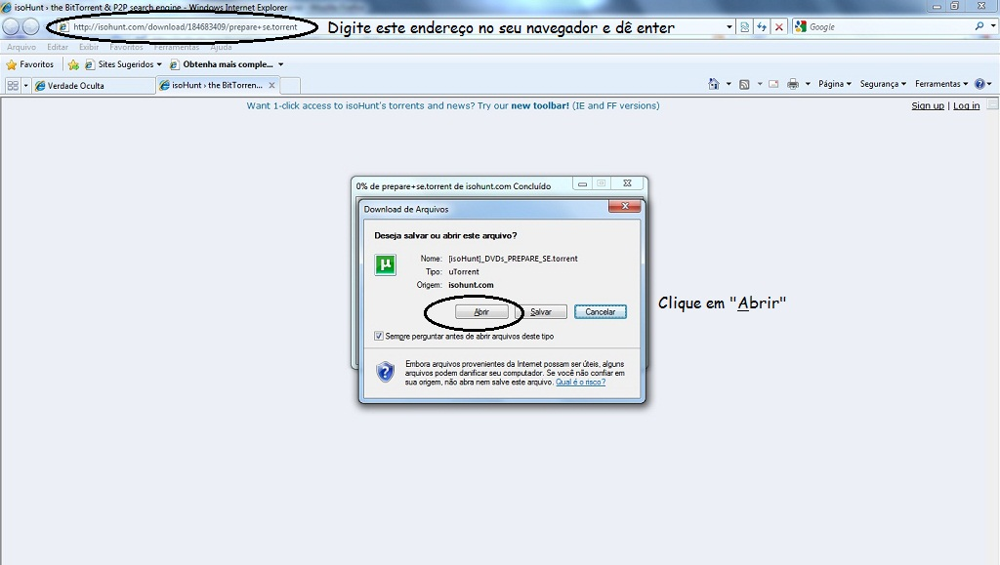
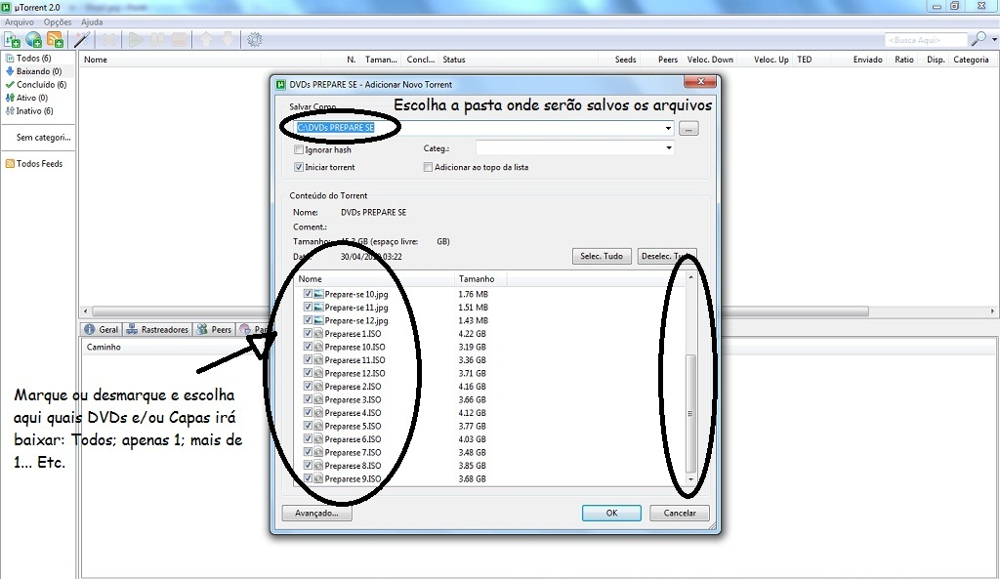
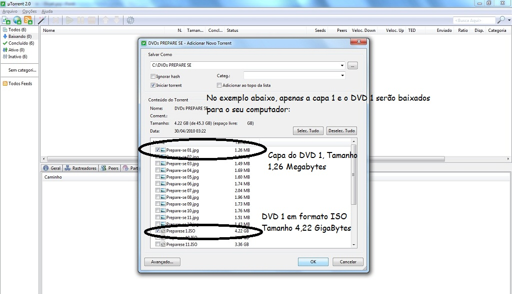

"Um homem não pode mudar o mundo, mas um homem pode comunicar a mensagem que mudará o mundo."
DOWNLOAD DOS 12 DVD'S DA SÉRIE PREPARE-SE
Trazido a você pelo Website Uma Nova Era - www.umanovaera.com
Siga as instruções abaixo para baixar e/ou comprar os DVD's
O Website Uma Nova Era está disponibilizando para download, GRATUITAMENTE e por tempo indeterminado, os 12 DVD's da série PREPARE-SE, produzido pelo amigo Rubens Sodré - www.verdadeoculta.com.br, que gentilmente e expressamente autoriza e incentiva a divulgação, cópia e/ou até mesmo a venda dos seus DVD's sem o pagamento dos chamados "direitos autorais", tratando-se portanto de uma produção de Domínio Público.
Peço a colaboração de todos aqueles que se sintonizam com esse trabalho para que o divulguem e tornem ainda mais acessível para a população em geral todos esses temas abordados nessa Série e neste Website. Se puder, contribua com nosso trabalho fazendo uma doação e nos ajudando com isso a mantê-lo.
Alternativamente, caso não disponha de uma conexão de banda larga (recomendada para baixar os cerca de 46 GB da série completa) ou por algum outro motivo, você pode adquirir os 12 DVD's diretamente com o próprio autor, acessando o seu website o VerdadeOculta.com.br.
INSTRUÇÕES PARA O DOWNLOAD DA SÉRIE PREPARE-SE
Passo 1: Faça o Download e instale um Programa de Compartilhamento de Arquivos Torrent (recomendo o programa uTorrent):
Link para baixar o programa: http://www.baixaki.com.br/download/utorrent.htm;
Passo 2: Baixe o arquivo torrent da série PREPARE-SE no link http://isohunt.com/download/184683409/prepare+se.torrent e abra ele com o seu programa preferido de compartilhamento de arquivos tipo Torrent (no exemplo abaixo, o escolhido foi o uTorrent);

Passo 3: Escolha a pasta onde serão salvos os arquivos.
ATENÇÃO: Verifique se possui espaço livre disponível para acomodar os cerca de 46 GB dos 12 DVD's + 12 Capas em seu computador;

Caso não possua espaço livre
suficiente em seu computador ou por algum outro motivo, ao
invés dos 12 DVD's + as 12 Capas, você
pode escolher baixar apenas 1 DVD + 1 capa, por exemplo, ou 6
DVD's + 6 capas, ou 3 DVD's + 1 capa, dentre outras diversas
combinações. Utilize a que mais lhe convier;

Passo 4: os DVDs estão em formato ISO. Usando o Nero ou algum programa similar, você poderá gravar esses 12 arquivos ISO em 12 DVD's e posteriormente assistí-los no próprio computador ou em um aparelho de DVD;
Passo 5: É possível também assistir os DVD's no próprio computador, sem a necessidade de gravá-los. Basta baixar e instalar o programa MagicDisc ou um outro similar: link para download http://www.baixaki.com.br/download/magicdisc.htm
Com este programa você poderá criar "Drives Virtuais" no seu computador e assistir diretamente nele, sem a necessidade de gravar o arquivo "Preparese x.ISO" em um DVD para que só depois possa assistí-lo.
Jackson Macêdo - Editor/Webmaster Website Uma Nova Era
|
Contamos com sua
Colaboração Para manter este Website
|
NOTA: Jackson Macêdo e o Website Uma Nova Era pode ou não concordar com todas as informações ou conclusões destes DVDs. Esse conteúdo é apresentado e disponibilizado aqui sem modificação para o seu benefício e pesquisa.
Caminhos a Seguir: Fascismo Ou Liberdade? Parte 1
OS MICRO, MICRO, MICRO-CHIPS - O QUÃO PEQUENOS ELES REALMENTE SÃO